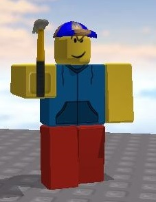
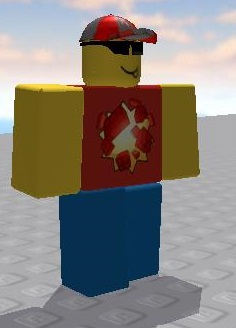

LD50

Status: Deceased
LD50 was the original protagonist of the Crappy Roblox Videos.
Debuting in Part 1, he was once part of a demolition crew before the
Balls incident. He later roamed various Roblox revivals until Season 3,
where a cliche threat known as "The Culprit", who plans to destroy all revivals.
LD50 later died in a Meme Police shootout in Halloween 2020.
|
Ledu50

Status: Alive
Ledu50 is the second main protagonist.
Debuting in Part 8, he was originally planning to take over Graphictoria while being intercepted by the Meme Police.
In Season 3, he helped LD50 and others on a quest to stop "The Culprit" and his noob army.
When you are not looking or least expect it, your
memes may have been stolen. >:)
|